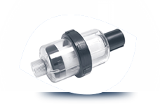

Consultoria Ambiental
Com profissionais especializados oferecemos projetos, estudos, treinamentos, monitoramento, identificação e resolução de seus problemas ambientais.
Licenciamento Ambiental
A responsabilidade ambiental é fator cada vez mais exigido as empresas, assim oferecemos nosso serviço de licenciamento ambiental junto a CETESB/SP para que se adeque a legislação ambiental local.

Sistemas de Reuso de água
Dada a importância sobre a questão da conservação e o reuso da água na indústria, elaboramos e desenvolvemos soluções de adequação e melhorias no processo de tratamento e reaproveitamento das águas e efluentes industriais.